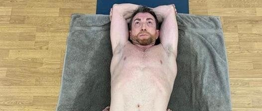

Er Pablo Motoh ette

Er pablo Motoh hacieno yoga.
Quien és el Pablo Motoh?
Pablo Motos empezó su carrera mediática como locutor y como disc-jockey y director de la Radio de Requena. Más tarde trabajó en Radio Nacional en Utiel, y después en Onda Cero Valencia, donde ha presentado y dirigido programas como Aquí hay más de uno, Mareando la perdiz o Hacia el dos mil, donde además ha formado parte del equipo como colaborador de la Radio de Julia Otero. Entre septiembre de 2002 y el 22 de junio de 2007 presentó el programa No somos nadie en M80 Radio por las mañanas de lunes a viernes, llenando el hueco que había dejado el programa Gomaespuma.23